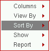

2
Parasitic Aware Design in ADE Explorer and ADE Assembler
Advanced parasitic aware design functionality, includes the functionality to:
- Specify R estimates
- Specify coupled C estimates
- Specify decoupled C estimates
- Specify L (inductance) and K (mutual inductance) estimates
- Browse parasitic estimates
- Build parasitic/LDE views
- Sweep parasitics during simulation
- Sweep device parameters and perform sensitivity analysis in the presence of estimated parasitics
- Set Parasitic Mode toolbar settings to allow smooth re-binding of tests to parasitic/LDE (estimated) or extracted views, and control parasitic and device sweeps
- Set parasitic filters to provide simpler and more sophisticated control over which parasitics to include when refining the extracted view
- Generate reports on parasitics in parasitic/LDE (estimated) and extracted views
- Compare parasitic/LDE (estimated) schematic views with extracted parasitic views
- Investigate parasitics utilizing selections on the schematic or in the Navigator assistant
For more information on parasitic aware design features seeAvailability of Parasitic Aware Design Features.
Chapter Contents
This chapter contains the following main topics:
- Accessing Parasitic Aware Design Functionality
- Setting Up and Using Parasitics
- Extracted Parasitics
- Parasitics & Electrical Setup Assistant
- Parasitic Filters Assistant
- Parasitic Report Assistant
- Parasitic Comparisons
- The Parasitic Mode Toolbar
Accessing Parasitic Aware Design Functionality
You can access parasitic aware design functionality using one of the following methods:
-
From the Parasitics/LDE menu (select Menu – Parasitics/LDE).
Figure 2-1 The Parasitics/LDE Menu
The Parasitics/LDE menu contains the following parasitic sub-menu options:- Setup (see Parasitics/LDE – Setup)
- Create Estimates (see Parasitics/LDE – Create Estimates)
- Create Filters (see Parasitics/LDE – Create Filters)
- Report (Parasitics/LDE – Report)
- Compare (see Parasitics/LDE – Compare)
- Options (see Parasitics/LDE – Options)
-
From The Parasitic Mode Toolbar (select Window – Toolbars – Parasitic Mode).
This toolbar can be used to simplify simulation with parasitic/LDE (estimated) or extracted parasitics. -
From the following parasitic assistant panes (select Window – Assistants toolbar pull-down):
You can also access these assistants from the session window toolbar context-menu.Edits made in any of the parasitic assistants, or the Constraint Manager, may subsequently require an update to the parasitic/LDE (and schematic) view. If this is the case, a warning message will prompt you if you want to rebuild the impacted views. See also Building the Parasitic/LDE View.
Customizing Parasitic Assistant Display
You can customize the look and feel of each of the parasitic assistants in the following manner to best suit your needs:
-
Right-clicking over the toolbar area of any parasitic assistant allows to you select/clear the component parts that you want to display, including the toolbar icons.
Figure 2-2 Right-clicking over the Parasitic Filters Assistant Toolbar -
You can also control the information that you want to display in parasitic assistants by choosing what information order and column headers that you want to have on view. To do this, right-click over the column headers to view the column/information display options available with each assistant.
Figure 2-3 Right-clicking over the Parasitics & Electrical Setup Assistant Column Headers
Parasitic Aware Design Workspace Configurations
The Virtuoso Schematic Editor provides three workspace options in the Window menu:
Parasitics-Estimates: The Parasitics-Estimates workspace is used for the specification of parasitic estimates. This workspace contains the Parasitics & Electrical Setup Assistant.
Parasitics-Filters: The Parasitics-Filters workspace is used to generate refined extracted views. It comprises of the Parasitic Filters Assistant.
Parasitics-Report: The Parasitics-Report workspace is used to report parasitic estimated/extracted values and compare parasitic views. This workspace contains the
The Parasitics-Estimates workspace focuses on estimated parasitics while Parasitics-Filters is used in the extracted parasitics flow. The Parasitics-Report workspace can be used with both the parasitics/LDE (estimated) and extracted flows.
- For general information on workspaces and assistants, including how to create your own customized workspaces, see the Virtuoso Studio Design Environment User Guide.
Setting Up and Using Parasitics
This section contains information on:
And, the contents of the Parasitics/LDE menu:
- Parasitics/LDE – Setup
- Parasitics/LDE – Create Estimates
- Parasitics/LDE – Create Filters
- Parasitics/LDE – Report
- Parasitics/LDE – Compare
- Parasitics/LDE – Options
An Introduction to Parasitic Estimates
The parasitic aware design flow provides the functionality to generate estimated parasitics, pre-layout, for simulation. Here, parasitic values are specified through estimates which are stored in parasitic estimate cell views separate from, but still associated with, the schematic view.
After layout is done, and has been extracted using Quantus QRC/RCX to create an extracted view, parasitic aware design can compare these parasitic estimates against the actual parasitic values, highlighting any parasitics that exceed their estimated values or differ from them by more than any optional specified tolerances. To achieve this you can control the comparison method which can treat estimates as either limits or targets, with a specified tolerance expressed as a percentage.
Estimated parasitics, through the performance of a pre-layout simulation, will help ensure that your design will function correctly with specific estimated parasitic values. Once the design has been laid out, the actual extracted parasitic values can then be compared against the estimates.
Some benefits to using parasitic estimates include:
- ADE integration via The Parasitic Mode Toolbar, for example automatic test rebinding and control of parasitic versus device parameters for sensitivity analysis and optimization.
- Parasitic estimates are an overlay over “golden” schematics that may be read-only, avoiding the need to edit the schematic.
- Different parasitic estimates can be applied to different instances in the design of the same cell. This cannot be done by directly editing the schematic.
- Different parasitic estimates can be overlaid onto the schematic for “what if” experiments, process variations, and so on.
Parasitics/LDE – Setup
You must set up parasitics before starting any additional parasitic tasks. Choose Parasitics/LDE – Setup to display the Parasitics & LDE Setup form, as shown below.
Figure 2-4 Setup Parasitics and LDE Form
The following topics describe the different tabs of the Parasitics & LDE Setup form:
General Tab
The library, cell, and view name will also be displayed in the Build Parasitic/LDE View form (see Building the Parasitic/LDE View) that you use to build the parasitic/LDE view.
This tab contains the following fields:
| Form Field | Description |
|
Specifies the Library, Cell, and View names of the top-level schematic design that parasitic estimates should be associated with. |
|
- Library |
|
- Cell |
|
-View |
|
|
Specifies the power and ground nets. Parasitic aware design uses these nets to determine which parasitic capacitances are decoupled (one side of the capacitor is connected to a power or ground net) or coupled (the capacitance is between two other nets). See also Capacitance Estimates.
You can either enter the net names or select the power and ground nets directly from the schematic. To select the nets from schematic, click Select from Schematic. The schematic view is displayed in a new tab if it is not already open. If the schematic is already open in another tab, that tab will be displayed. Now you can select the supply nets on this tab. After selecting the supply nets, press the |
|
|
While generating a netlist with parasitics, if the tool finds any cell with parameter names listed in field, it expands the cell if the Expand Devices with M-Factor check box is selected. However, when using LDE parameters, cells will be expanded according to the multiple factors used in the layout or MODGEN constraint. In both cases, the m-factor value on the individual expanded devices in the netlist is reset to |
|
|
While generating a netlist with parasitics, if the tool finds any cell with the given finger parameter names, it expands the cell if the Expand Devices with M-Factor check box is selected. However, when using LDE parameters, cells will be expanded according to the multiple fingers used in the layout or MODGEN constraint. |
- Once the setup information has been added, it is preserved for future sessions.
- It is recommended that you set the parasitic/LDE view at the DUT (design under test) level. A parasitic/LDE view created at the DUT level allows you to run simulations with multiple testbenches, each pointing to the same parasitic/LDE view.
- Parasitic estimate functionality is available only from a configuration or a schematic view; it is not available form an extracted view.
- The information from this form is shared across all tabs in the current session window. Therefore, once you have set up parasitics in one session window tab, parasitics functionality will be set up for use across all other tabs open in the current session. For more information about the use of tabs, see Tabs in a Session Window in the Virtuoso Studio Design Environment User Guide.
- Certain parasitics functionality, such as backannotation and reporting, is available only when you open the schematic view specified in the Parasitic & LDE Setup form (or descend below it).
Schematic Estimates Tab
This tab sets the name of the schematic view and the default resistance and capacitance values that are to be used when estimate constraints are first created. These values can be constants or expressions that contain ADE variables.
The tab contains the following fields:
You can specify the initial values of the fields described above by setting the corresponding variables in the .cdsenv file as shown in the following examples:
msps.estimates defaultR string “1.0”
msps.estimates defaultL string “1.0p”
msps.estimates defaultK string “0.1”
msps.estimates defaultCC string “10f”
msps.estimates defaultDC string “10f”
- Select Parasitics/LDE – Setup to display the Parasitics & LDE Setup form.
- Complete the Design Under test section on the General tab as required.
-
Enter the names of the power and ground nets in the Power and Ground Nets field.
- On the Schematic Estimates tab, set the Default Estimate Values for R, L, K, CoupledC, and DecoupledC.
-
Click OK to complete parasitic setup and close the Parasitics & LDE Setup form.
Parasitic functionality will now be available in all tabs open in the current session window.
Layout Tab
This tab specifies the options to include parasitics from a layout view, or to include layout dependent effects (LDEs) from Modgen constraints or from a layout view (partial or complete).
For more information about simulating designs with LDE, see the
This tab contains the following fields:
| Form Field | Description |
|
Specifies the name of the view to be used to create a netlist that includes parasitics or LDE parameters from the layout view. |
|
|
Name of the library of the design that contains a layout cellview with layout parasitics. |
|
|
Name of the design cell that contains a layout view with layout parasitics. |
|
|
Name of the layout view that contains layout parasitics to be used in resimulation of a design. This can be a partial or a complete layout view. When you specify a layout name in this field, select Include Parasitics From Layout option in the Parasitics section on the Layout tab or the Layout View option in the LDE section on the Layout tab. This is helpful in the EAD or LDE flow. |
|
|
This section contains fields to be used while including parasitics from a layout view. This is required while simulating a design with layout dependent effects or in the Electrically Aware Design flow. For more details, refer to |
|
|
Specifies the source of parasitics. You can select any one of the following three sources:
|
|
|
When you choose to include parasitics from the specified layout view, names of the all the extracted corners for that layout are listed in this field. Select name of the desired corner. |
|
|
Specifies name of the ground net to be used for grounded capacitance. You can either type a name in this field or click Select from Schematic to select a net from the design schematic.
|
|
|
Specifies if it is required to expand the devices with multiple factors before generating a netlist. When this option is selected, the m-factor parameter on the schematic device is then used to create multiple parallel devices in the netlist view. This allows the parasitics for the nets between each m-factor instance in the layout to be brought into the netlist view for simulation. If this check box is disabled, the device is represented as a single instance in the netlist view, and the parasitics between m-factor instances will not be included. |
|
|
This section contains fields to be used while including layout dependent effects from a layout view. This is required while re-simulating a design in the |
|
|
Specifies the source of LDEs. You can choose any one of the following options:
|
|
|
Specifies that if there are any dummy cells backannotated from layout to the schematic view, they need to be ignored while generating a netlist for simulation.
For more details on backannotated dummy instances, refer to |
/tmp/<username>_pvs_* directory and is automatically deleted when you exit the Virtuoso session. However, for debugging purposes, you can preserve the Virtuoso IPVS log file. For this, set the Virtuoso_IPVS_log environment variable before starting Virtuoso. For more details, refer to Debugging Problems in Virtuoso IPVS in the Virtuoso IPVS User Guide.Extracted Tab
This section specifies name of the extracted view that contains the extracted parasitic details.
See also: Creating an Analog Extracted View.
Parasitics/LDE – Create Estimates
Selecting Parasitics/LDE – Create Estimates displays the Parasitics & Electrical Setup Assistant.
Amongst other features, from here you can create estimated parasitics and build a parasitic/LDE view.
Parasitics/LDE – Create Filters
Selecting Parasitics/LDE – Create Filters displays the Parasitic Filters Assistant.
Amongst other features, from here you can create parasitic filters and refine the extracted view.
Parasitics/LDE – Report
Selecting Parasitics/LDE – Report displays the Parasitic Report Assistant.
Amongst other features, from here you can create a range of parasitic reports (including comparing the parasitic/LDE and extracted views), export this report information, and cross-probe with the extracted view.
Parasitics/LDE – Compare
Selecting Parasitics/LDE – Compare displays the Compare Parasitics form (see Parasitic Comparisons and Comparison Reports).
From here you can setup parasitic comparisons for the parasitic/LDE schematic and extracted views.
Parasitics/LDE – Options
Selecting Parasitics/LDE – Options displays the Options form.
The Options form contains a selection of options related to backannotation and parasitic probing for estimated and extracted parasitics (see Extracted Parasitics).
Values entered here will determine some of the content of other parasitic aware design forms.
| GUI Item | Description |
|---|---|
- Backannotate values |
Specify the backannotation values that you want to view (R, C and/or L). |
- Font Size |
Specify the label font size for displaying parasitic backannotation. |
- X Offset |
Sets the horizontal offset from the centre of the net when displaying parasitics. |
- Y Offset |
Sets the vertical offset from the centre of the net when displaying parasitics. |
|
(See also the Extracted Parasitics). |
|
- Initially Sort By |
Specify the initial sorting method (Instance, Type, Value, From, or To) to be used when probing parasitics on nets |
- Extracted Nets |
Check the grouped option to report parasitics for the whole design net when probing an extracted net (this will work as if probing in the schematic). For detailed debugging however, you should clear the grouped option. In this case the report will be specific to the selected extracted net fragment. |
|
(See also the Extracted Parasitics). |
|
- Net names on parasitic instance terminals |
Enables the display of the names of nets connected to terminals of parasitic instances in the extracted view. |
Extracted Parasitics
This section on extracted parasitics contains the following information:
- An Introduction to Extracted Parasitics
- An Introduction to Parasitic Filters
- Extracted Parasitics Flow Overview
- Optimizing an Extracted or Layout View
Related Information
- For information on how parasitic aware design interacts with Quantus QRC and RCX to create an extracted view see An Analog Simulation Flow using PVS.
- For information on refined extracted parasitics interaction with the Parasitics Filter assistant, see the Parasitic Filters Assistant.
An Introduction to Extracted Parasitics
Parasitic aware design also provides functionality that enables you to filter parasitics from an extracted view to create a new, refined, extracted view so that you can debug the sensitivities of various nets to parasitics and speed up simulation.
To achieve this, parasitic aware design uses the Virtuoso unified constraints system (see Virtuoso Unified Custom Constraints User Guide) to create and edit filters (special parasitic aware design constraints).
The refined extracted parasitics options can be accessed via the Parasitics/LDE - Create Filters menu option or the Parasitics - Extracted workspace.
An Introduction to Parasitic Filters
You can make selections from the schematic view to populate a filter.
These filters are stored in the constraints database, along with other constraints, but are only retrievable using parasitic aware design. Parasitic aware design will use these filters to determine which parasitics should be maintained in any resultant refined extracted view.
The Parasitic Filters Assistant can be used to filter parasitics from the entire extracted view using a threshold value, or you can refine parasitics on a net by net or block by block basis, to simulate the new extracted view.
Extracted Parasitics Flow Overview
A brief overview of the extracted parasitics flow, in the back end, is described as follows:
Optimizing an Extracted or Layout View
You can sweep the parameters of an extracted design, run simulations, and optimize the design to meet the desired specifications. The simulation results are reported in the Results tab and the optimized parameter values can be backannotated to the schematic.
To simulate an extracted or parasitic/LDE view, do the following:
-
Click Parasitic/LDE – Setup.
The Setup Parasitics and LDE form is displayed. - Specify the name of the extracted view in the Extracted View Name field.
- Click OK to close the Setup Parasitics and LDE form.
-
In the Parasitic Mode toolbar, select
Extracted (Parasitic/LDE).If you are considering the layout-dependent effects (LDEs) or parasitics from a layout view, which is specified in the Layout view name for parasitics and LDEs field in the Setup Parasitics and LDE form, select theNote the following in the Data View pane:Layout (Parasitics/LDE)parasitic mode.-
The device parameters that define the m-factors or fingers are disabled and shown with a strikethrough, as shown in the following figure.In the above example figure,
M1/fingersandM0/fingersare the two parameters that are defining the number of fingers for devicesM1andM0, respectively. This indicates that the extracted view simulation flow will not consider these parameters because they have already been extracted out and are fixed in the extracted view. That is, the flow will not optimize the device multiplier or the number of fingers in a device.
You can specify the names of parameters that define these properties for a device in the Layout Tab section of the Setup parasitics and LDE form. - You cannot create any new parameter to define the m-factors or fingers for a device.
-
The device parameters that define the m-factors or fingers are disabled and shown with a strikethrough, as shown in the following figure.
- Ensure that the run mode is set to one of the following modes:
-
On the Run toolbar, click Run Simulation to run the simulation.
The simulation is run by using the extracted or the parasitic/LDE view for the testbench. After the simulation is successfully run, observe the following:-
All the parameters added from the schematic view are mapped to the extracted view. In addition, depending on the multiplier factor, an instance in the schematic is mapped to one or more devices in the extracted view.
For example, an instance M1 in the schematic may get mapped to the four devices in the extracted view that have been elaborated based on the values for them-factorandfingersparameters. If a device parameter isM1/fwwith values set to5u:1u:20u, when you switch the parasitic mode toExtracted (Parasitic/LDE), the following four parameters are created:M1/fw = 5u:1u:20u M1_1__rcx/fw = M1/fw@ M1_2__rcx/fw = M1/fw@ M1_3__rcx/fw = M1/fw@
On the assumption that each finger will take the same value, independent parameters are created for each finger and the parameters are matched against each other so they take the same value at each simulation point.
The sweep values for parameters are shown on the parameter headers in the Results tab, as shown below. -
When you place the pointer on the parameter header, the tooltip shows the names of the expanded devices and the values of their parameters used to run simulation.
- When optimization is complete, you can backannotate the parameter values of the point that best met the specifications. For this, right-click the parameter header and choose Backannotate. In the Back Annotation Options form that is displayed, make sure that the Only device parameters option is selected and click OK. The corresponding device is highlighted in the schematic and the parameter value is annotated.
-
The expanded parameter details are saved in the history. You can view the parameter values used for a particular history by expanding the Parameters tree on the History tab.
-
All the parameters added from the schematic view are mapped to the extracted view. In addition, depending on the multiplier factor, an instance in the schematic is mapped to one or more devices in the extracted view.
Parasitics & Electrical Setup Assistant
Parasitic estimates comprise of a “star-shaped” model for each net.
- Manual parasitic estimate resistances and inductors are associated with the net’s instance terminals. The instance terminals may be instance terminals of instances with/without underlying hierarchy. The parasitic resistances and inductors for a specific instance terminal, or net terminal, will always be added in series.
- Manual parasitic estimate mutual inductance is associated with the two estimated parasitic inductances.
- Coupled and decoupled capacitances are associated with the net collectively and connects to the center of the star.
Estimates are stored as constraints and for simulation purposes an (parasitic/LDE) estimated schematic cellview must be generated from the design and user-selected estimates.
This section on the Parasitics & Electrical Setup assistant comprises of the following:
- Accessing the Parasitics & Electrical Setup Assistant
- The Parasitics & Electrical Estimates Assistant Toolbar
- Creating Parasitic Estimates
- Saving Parasitic Estimates Created in the Current Session
- The Parasitics & Electrical Setup Assistant Context-Menu
Accessing the Parasitics & Electrical Setup Assistant
The Parasitics & Electrical Setup assistant can be accessed using one of the following methods:
- By selecting Window – Workspaces – Parasitics-Estimates to display the Setting Up and Using Parasitics.
- By selecting Window – Assistants – Parasitic Estimates.
-
By selecting Parasitics/LDE – Create Estimates.
Figure 2-6 The Parasitics & Electrical Setup Assistant
The Parasitics & Electrical Setup assistant details the current Parasitic Estimate constraints (this is the only constraint type that is listed) which can be expanded to reveal the current constraint members.
The Parasitics & Electrical Estimates Assistant Toolbar
Figure 2-7 Parasitics & Electrical Setup Assistant Toolbar
The Parasitics & Electrical Setup assistant toolbar provides the following options:
- Save Estimates (see Saving Parasitic Estimates Created in the Current Session)
-
Create Estimated Parasitics (see Creating Parasitic Estimates) with the following options available in the pull-down:
- Create Estimated Capacitance (see Capacitance Estimates)
- Create Estimated Resistance (see Resistance Estimates)
- Create Estimated Inductance (see Inductance Estimates)
- Create Estimated Mutual Inductance (see Inductance Estimates)
- Create Custom Estimated Parasitic (see Custom Estimated Parasitics)
- Create Layout Stitching Estimates for Cell (see Creating Layout Stitching Estimates for a Cell)
- Create Override
- Match Estimate Parameters
- Unmatch Estimate Parameters
- Build Parasitic/LDE View (see Building the Parasitic/LDE View)
-
Transfer estimates to constraints transfers all the estimates to the Constraint ManagerUse the createMaxCapDuringTransfer environment variable to enable or disable the creation of maximum capacitance constraints when transferring coupling capacitance estimates to constraints.
- Estimate Editor
- Delete a selected parasitic estimate
- Select All parasitic estimates listed
- Deselect All parasitic estimates listed
- Editing / Reading displays the current mode
- Show Filters / Customize Constraint Filters - see Filtering Constraints in the Virtuoso Unified Custom Constraints User Guide.
The Parasitics & Electrical Setup Assistant Estimate Editor
Click the Estimate Editor icon in the Parasitics & Electrical Setup Assistant and Filter Editor in the Parasitic Filters Assistant toolbars to display an editing table where you can edit various parameters associated with each parasitic estimate.
Figure 2-8 The Parasitics & Electrical Setup Assistant with the Estimate Editor Selected
For more information on how to edit parameter values, see
Reverting To Default Values
You can restore default values for fields, for example Sweep, by selecting the Revert to default icon to the right hand-side of the edit field.
Figure 2-9 Revert to Default Icon
The Parasitics & Electrical Setup Assistant Context-Menu
Right-clicking over the Parasitics & Electrical Setup assistant displays a context-menu. From here you can perform a variety of tasks including saving parasitic estimates and controlling object visualization on the design canvas and in the
Figure 2-10 Parasitics & Electrical Setup Assistant context-menu
The full contents of the Parasitics & Electrical Setup assistant context menu are listed in the table below.
| Context-Sensitive Menu Option | Description |
|
Expands all branches in the Parasitics & Electrical Setup assistant to show all estimate member objects. |
|
|
Collapses all branches in the Parasitics & Electrical Setup assistant to hide all estimate member objects. |
|
|
Selects all constraint members that belong to the currently selected (expanded) estimate. |
|
|
Creates a capacitance estimate constraint for the selected objects. For more information see Capacitance Estimates. |
|
|
Creates a resistance estimate constraint for the selected objects. For more information see Resistance Estimates. |
|
|
Creates an inductance estimate constraint for the selected objects. For more information see Inductance Estimates. |
|
|
Creates a mutual inductance estimate constraint for the selected objects. For more information see Inductance Estimates. |
|
|
Creates an estimate at the current level that overrides one at a lower level.
For more information see |
|
|
Creates a match between two or more estimates selected in the Parasitic Estimates assistant.
You cannot match a resistance against a capacitance estimate. Matching will only work between resistances, and only between capacitances.
The first selected instance is considered the “
For example, if you select two terminals, Note: You can match a coupledC estimate with a decoupledC estimate. |
|
|
Removes a match and reverts the selected parasitics back to their default values. Option will be enabled if at least one of the estimate selections is currently matched. |
|
|
Selects all the terminals for the selected instances to be added to the electrical selection setup.
For more information, see |
|
|
Selects all the terminals of the instances within the currently selected instances.
For more information, see |
|
|
Selects all the terminals for all the instances in the complete design hierarchy.
For more information, see |
|
|
Displays the Constraint Manager Options form.
For more information see |
Creating Parasitic Estimates
To create parasitic estimates using the Parasitics & Electrical Setup assistant:
-
Select the nets that you want to create parasitic estimate constraints for from either the design canvas or the Navigator assistant. Alternatively, you can select instance terminal(s) if you only want to create parasitic estimates for a particular instance’s terminal(s).
If, for a given net, there is a parasitic resistance estimate that only contains some of the instance terminals, you can select the remaining instance terminals, or the net, and continue with estimate creation to include the rest of the instance terminals (see also Resistance Estimates). -
Select the Create Estimated Parasitics pull-down from the The Parasitics & Electrical Estimates Assistant Toolbar at the top of the Parasitics & Electrical Setup assistant. This will display the following list of parasitic estimates that can be created:
-
Create Estimated Capacitance (see Capacitance Estimates).
-
Create Estimated Resistance (Resistance Estimates)
-
Create Estimated Inductance (Inductance Estimates)
-
Create Estimated Mutual Inductance (Inductance Estimates)See Creating Constraints at Different Design Levels which details that constraints/estimates need to be created on a level-by-level basis.
- Create Custom Estimated Parasitics (Custom Estimated Parasitics)
- Create Layout Stitching Estimates for Cell - For more details, refer to Creating Layout Stitching Estimates for a Cell in the Virtuoso Electrically Aware Design user guide.
-
Create Estimated Capacitance (see Capacitance Estimates).
After you choose which type of parasitic estimate you want to create, it is added to the Parasitic Estimates assistant and a default value is assigned to it. If required, you can change the value of an estimate.
You can now proceed to Building the Parasitic/LDE View.
See also
Capacitance Estimates
See also: Creating Parasitic Estimates.
The method used to Create Estimated Capacitance for nets/buses is dependent upon the number of nets (bus or non-bus) that have been selected in the design canvas or the
-
If one (non-bus) net is selected, the Create Estimated Capacitance form shown below is displayed.
Figure 2-11 Create Estimated Capacitance form
Using this form, you can create or stitch capacitance between the net you selected and a reference net chosen on this form. The various options displayed on this form are listed below.
– Create/stitch capacitance from this net to <supply-net>: Creates a capacitance between the selected net and a supply net you choose from the drop-down list.
– Stitch all capacitance from this net to any other net in the design: Stitches all the capacitance from the selected net to any other net in the design. For example, if you select netA and select this option, any capacitance available in the layout view to netA is stitched. You do not need to explicitly stitch capacitance between the available net pairs in the design, for example, netA and netB; netA and netC; and netA and gnd!. Every capacitance available in the layout that is connected to netA will be included.
– Stitch coupled capacitance from this net to any other net in the design: Stitches all the coupled capacitance from the selected net to any other net in the design.
– Stitch decoupled capacitance from this net to the reference net: Stitches only the decoupled capacitance from the selected net to the reference net.
- If two (non-bus) nets are selected, estimated capacitance will be created between these two nets.
-
If three or more (non-bus) nets are selected, the Create Estimated Capacitance form is displayed as shown below.
Figure 2-12 Create Estimated Capacitance form with three net selection
The various options displayed on this form are listed below.
– Create/stitch capacitance from each net to <supply-net>: Creates a capacitance between each selected net and a supply net you choose from the drop-down list.
– Create/stitch capacitance between each pair of selected nets: Creates a capacitance between every possible pair of the selected nets.
– Stitch all capacitance from each net to any other net in the design: Stitches all the capacitance from each selected net to any other net in the design.
– Stitch coupled capacitance from each net to any other net in the design: Stitches all the coupled capacitance from each selected net to any other net in the design.
– Stitch decoupled capacitance from each net to the reference net: Stitches only the decoupled capacitance from each selected net to the reference net. The reference net being either one of the selected nets or a supply net.
-
If one bus net has been selected, the Create Estimated Capacitance form allows you to create capacitance between adjacent bits in the bus and/or from each selected bit to a reference net (the possible reference nets being each bus bit or the supply nets from the Setup form).
When creating capacitance to adjacent bits, the Create Estimated Capacitance form creates an estimate between selected bits and their adjacent bits. -
If you have a multiple selection of bus and non-bus nets, the Create Estimated Capacitance form will display each bus/net. The possible reference nets will include all bus bits and non-bus nets as well as supply nets from the Setup form.
- Creation of estimates to adjacent bits will only occur within each bus. Inter-bus estimates are not created.
Resistance Estimates
See also: Creating Parasitic Estimates.
The Create Estimated Resistance option creates an estimate constraint for each selected net, instance terminal, or pin.
Selecting a net and choosing Create Estimated Resistance creates a resistor from a common central node for the net to each of its instance terminals and pins. This creates a parasitic network known as a star network.
The parameter r represents the resistance associated with each instance terminal or pin. A common value can be set for all parasitic resistors on a net by selecting the net name in the Parasitics & Electrical Setup assistant assistant and editing the r value in the parameter editing table at the bottom of the assistant. The value can be overridden for individual terminals or pins by selecting the appropriate constraint member and editing its associated r value in the parameter editing table.
It is not always desirable to create a resistance for every instance terminal and pin on a net. Variations of the star network can be made as follows:
- You can create a single resistance between a pin or instance terminal and the rest of the net. For this, select only the pin or instance terminal and choose Create Estimated Resistance.
- You can delete a member of the estimate constraint to remove the parasitic resistor for that instance terminal or pin and to connect it directly to the central node of the star network.
Inductance Estimates
See also: Creating Parasitic Estimates.
You can use the Parasitics & Electrical Setup Assistant to create both inductance and mutual inductance estimates using the Create Estimated Inductance and Create Estimated Mutual Inductance options, respectively, from the Create Estimated Parasitics pull-down on The Parasitics & Electrical Estimates Assistant Toolbar. Both of these options can have a number of use models, for example:
Creating estimated (self) inductance use models:
- You can select a net in the schematic canvas (or using the Navigator assistant) and then select the Create Estimated Inductance option. In this case, the L estimate members will be all the instance terminals of the nets. R estimates will also be created, in series at each instance terminal when L is added (if not already present).
-
Alternatively, you can select instance terminals in the schematic and then choose the Create Estimated Inductance option. Here, the L estimate members would be the selected instance terminals only. If, for a net, an L estimate already exists, but with only a subset of its instance terminals, it is possible to extend the L estimate for the same net by selecting additional instance terminals on the schematic canvas, or in the Navigator, and then choosing the Create Estimated Inductance option in the browser. All of the newly selected instance terminals would now be added to the existing L estimate. R estimates will also be created, in series at each instance terminal when L is added (if not already present).
Creating estimated mutual inductance use models:
- You can select two different inductors (two members from one or more L estimates in the Parasitics & Electrical Setup assistant browser) and then choose the Create Estimated Mutual Inductance (K) option from the Create Estimated Parasitics pull-down. In this case, an estimated K will be created with the chosen inductors (the members of the L estimate) being its members.
-
You can select more than two inductors (more than two members from one or more L estimates in the Parasitics & Electrical Setup assistant browser) and then choose the Create Estimated Mutual Inductance (K) option.
When you select more than two inductors, to create a K estimate, a Create Mutual Inductance form is displayed. From here, you can specify what inductor is to be the reference inductor. That is, where mutual inductance will be created between the reference L and all other inductors. - You can select two instance terminals and then click the K option. Here, if any of the selected instances are not existing members of an L estimate, an L estimate will first of all be created, using the selected instance terminals, prior to creating a K estimate for the two instance terminals. R estimates will also be created, in series at each instance terminal when L is added (if not already present).
-
You can select more than two instance terminals on the schematic canvas, or from the Navigator, and then click the Create Estimated Mutual Inductance (K) option. Here, L estimate will be created for all the instance terminals that are not already members of a L estimate, prior to the creation of multiple K estimates.
Again, the Create Mutual Inductance form is displayed to allow you to specify the reference inductor. Mutual inductance estimates will then be created between the reference L and the other inductors.
Figure 2-13 Create Mutual Inductance Form
Custom Estimated Parasitics
See also: Creating Parasitic Estimates.
The Create Custom Estimated Parasitics command on Parasitics & Electrical Setup Assistant allows you to use custom parasitic models in your design. These models are different from the standard R, C, L, or K types of parasitics, which are not always accurate enough to depict the required parasitic model. You can use custom parasitics to specify a custom topology that more closely represents the desired parasitic network on any given net.
The following example shows how a custom topology can be created for a two-terminal net. The parasitic network is created in a new schematic cellview. It defines a resistance network between two pins which represent the terminal connections on the net. Capacitance is connected from various nodes inside the network to a third pin. This pin is used to connect the capacitors to an external reference net when the model is placed.
You need to associate your parasitic cell with a symbol view that has pins corresponding to the external connections required to be created. The symbol view is used for the following purposes:
- To specify which custom parasitic model to use for a net
- To replace the net in the Parasitic/LDE view. When netlisting the Parasitic/LDE view, the net will be replaced with an instance representing the parasitic network.
A symbol for the example parasitic cell shown above can be created as given below.
Some important requirements for the symbol view of a custom parasitic cell are listed below:
- The number of terminals on the custom parasitic model must be equal to or greater than the number of terminals on the net to which it is to be connected.
- The custom parasitic model can be parameterized using CDF parameters. The CDF definitions should be created on the parasitic cell. The parameters will then be displayed in the Estimates Editor where the values can be modified for each instance of the model. In the implementation of the model, pPar expressions should be used to pass the parameter values down to instances inside the parasitic cell.
The following topics explain how to create and configure a custom parasitic estimate:
Creating Custom Parasitic Instances
To create a custom parasitic instance, select one of more nets on the schematic and choose the Create Estimated Parasitics – Create Custom Estimated Parasitics command on the Parasitics & Electrical Setup Assistant.
The Create Custom Estimated Parasitic form is displayed. In this form, select the library, cell, and view name of the custom parasitic cell, as shown in the figure below.
Alternatively, you can click the browse ( ) button to browse and select the required cellview.
An instance of the custom cell is created in your design and is listed in the Parasitics & Electrical Setup assistant, as shown in the figure below.
Configuring Custom Parasitic Instances
Click the parasitic instance in the assistant and open the Estimate Editor to display its properties. Observe that the library, cell and view name of the parasitic cell are displayed in the parLib, parCell, and parView properties of the instance. If required, you can select a different library, cell, and view.
You can now change the values of the properties to configure the instance.
-
terminalMap: The terminalMap property lists all the terminals in the selected net(s). Expand terminalMap to view the default mapping of the net terminals with the terminals of the parasitic instance. You can reconfigure this mapping as required.
You can either type in the net or terminal name or select a net or terminal on the schematic. -
CDF properties: The editable parameters of a custom parasitic are shown in the Estimate Editor. You can edit the values of these parameters and specify scalar or sweep values.
Entering Parasitic Sweeps
Sweeps are set in the parameter editing table in Parasitics & Electrical Setup Assistant by expanding the l, r, c or k parameters.
Figure 2-14 Parasitic Sweeps set in the Parasitics & Electrical Setup Assistant
The syntax is identical to that used for sweeps in global variables and parameters in ADE Explorer or ADE Assembler. For example, you can provide a comma-separated list of values: “10, 15, 25” or specify start, step, and stop values: “10:2:20”.
Specifying a range or sweep will create parasitic parameters in the Parasitics tab of the Variables and Parameters assistant (for information about this assistant, see the
Figure 2-15 Parasitic Sweep Displayed as Parasitic Parameter in Variables and Parameters Assistant
- After specifying a sweep, you must run the Build Parasitic/LDE View option in the Parasitic Estimates assistant to view the parasitic parameters in the Parasitics tab of the Variables and Parameters assistant.
-
The Parasitics tab of the Variables and Parameters assistant displays only the sweeps specified for the estimates that are enabled (Enabled field set to true) in the Parasitic Estimates assistant.
Figure 2-16 Example of Enabled Estimate
Restoring Default Sweep Values
You can restore default sweep values by selecting the Revert to default icon to the right hand-side of the edit field.
Figure 2-17 Revert to Default Icon
Enabling and Disabling Parasitic Sweeps
You can enable/disable parasitic sweeps in the Parasitic Estimates assistant or the Parasitics tab of the Variables and Parameters assistant.
Enabling and Disabling Parasitic Sweeps in the Parasitics & Electrical Setup Assistant
You can enable/disable parasitic sweeps directly in the Parasitic Estimates assistant (without having to use the Parasitics tab of the Variables and Parameters assistant).
To do this, first of all ensure that:
- The parasitic mode is set to Schematic Estimates on The Parasitic Mode Toolbar.
-
The parasitic estimate (or a member of an estimate that does not inherit a sweep value from its parent) under consideration has a sweep recorded in the estimated view.
- The r, c, l, or k parameter of a selected estimate, or one of its members, is expanded in the parameter editing table (so that you can view/edit the sweep parameter value).
From here, you can now enable/disable the current estimate sweeps by selecting or deselecting Enable/Disable Parasitic Sweep... from the parameter editing table context-menu or the adjacent check box.
Figure 2-18 Check box for Enabling/Disabling Parasitic Sweep
Enabling and Disabling Parasitic Sweeps in the Parasitics Tab of the Variables and Parameters Assistant
You can enable/disable parasitic sweeps in the Parasitics tab of the Variables and Parameters assistant by selecting or deselecting the check box next to each sweep parameter.
Saving Parasitic Estimates Created in the Current Session
Click the Save Estimates icon in the Parasitic Estimates assistant toolbar to save (or update) the parasitic estimates that have been created or edited in the current session.
For more information on the other options available in the Save Estimates pull-down see
Figure 2-19 Save Estimates pull-down options in the Parasitic Estimates assistant toolbar
Building the Parasitic/LDE View
Once you have finished Creating Parasitic Estimates you can now proceed to building a parasitic/LDE view.
Click the Build Parasitic/LDE View icon on the Parasitics & Electrical Setup assistant toolbar to display the Build Parasitic/LDE View form.
Figure 2-20 The Build Parasitic/LDE View Form
To build a parasitic/LDE view:
-
Specify the View Name for the parasitic/LDE view to be generated.
The default isestimatedbut this can be changed, allowing you create multiple parasitic/LDE cellviews.Using resistance, capacitance, or inductance values from a layout view to creates estimates checks out additional licenses.The Library Name, Cell Name, and View Name option settings are initially automatically infilled from the Design Under Test settings in the Parasitic/LDE Setup form (Setting Up and Using Parasitics). If you change the View Name in the Build Parasitic/LDE View form, this will not however update the setup form nor, consequently, the view that is used when reporting estimates (see the Parasitic Report assistant. -
Optionally, set scale factors for each parasitic type by activating the Multiply estimated parasitics by option, and entering scale values for R, L and C.
Each scale factor value entered will be applied globally to all parasitic estimates of the relevant type. A scale factor of “0” should not be entered.Default values for the Build Parasitic/LDE Schematic form can be controlled by the following.cdsenventries:msps.estimates viewName string "estimated" msps.estimates scaleR float 1.0 msps.estimates scaleL float 1.0 msps.estimates scaleC float 1.0 - Click the OK button to build the parasitic/LDE view.
-
Parasitic aware design will now create a flattened view of the schematic hierarchy, inserting the (scaled) estimates. The new parasitic/LDE view will be of a schematic view type. After the parasitic/LDE view is created, the tool displays the following message confirming the creation of the view and listing the parasitics found.
Figure 2-21 Build Parasitic/LDE View Successfully CreatedBefore building the parasitic/LDE view, you can set the reduceParallelCaps environment variable totto search for parallel capacitors in the parasitic/LDE view and to merge them into a single device.
Simulating and Probing Results
To run simulations using the generated parasitic/LDE view, you must change your configuration or create a new configuration view. Once simulation has completed you can then probe the results. This task can also be performed using the schematic testbench, via a
As the flattened schematic is only used for netlisting you will have to probe using the original schematic. This involves probing out-of-context where parasitic aware design will map between the design and estimated schematics.
Parasitic Stitching
Virtuoso Parasitic Aware Design can be used to create estimates directly based on an existing layout, of a similar design, where an existing Quantus QRC extracted view can have its parasitics stitched into the parasitic/LDE view.
As parasitic stitching involves a pre-layout simulation flow, the extracted view being from an existing, similar design, you must choose a view that models the parasitics with the desired accuracy (the stitching process will not modify parasitics to compensate for differences in m-factored devices, transistor fingers, or device sizes).
Parasitic stitching provides for:
-
The insertion of extracted parasitics, for critical nets, into an parasitic/LDE view. This allows you to choose to model parasitics using a net from an extracted view, leading to more accurate modelling where parasitic topology is critical.
-
A choice of parasitic types to be stitched. For example, where a parasitic net has resistance and capacitance, you may choose to stitch only resistance, only capacitance, or both. The only restriction is that if inductance is stitched, resistance must also be stitched.There is no explicit control over stitching of mutual inductance. Mutual inductors are included automatically where both contributing inductors have been stitched into the parasitic/LDE view. For more details on how mutual inductance is stitched based on the L estimates, refer to Important Points to Consider for Parasitic Stitching of Mutual Inductance.
-
Limited reduction of stitched parasitics is available using a filtering threshold, similar to that of the refined flow. Here, you can change the detail in the parasitic net by modifying the thresholds and rebuilding the parasitic/LDE view.
-
Reduction can also be performed using lumped resistance and inductance between Steiner points. Here, two or more PI models that are connected in a series are combined by adding the R and L values and replacing multiple segments with a single segment.
- Although stitched parasitics cannot be swept, it is possible to sweep device parameters and run a sensitivity analysis in the presence of stitched parasitics.
-
The mixing of stitched estimates with manual estimates. You cannot have a stitched and manual estimate of the same type on the same net. However, you can mix estimates where they are of different types. For example:
- You may stitch the R and L for a net, but place a manual decoupled capacitance estimate for the same net. In this case, the manual C will be attached to the stitched network at an arbitrary point.
- Alternatively, you may create a manual R and L estimate and stitch the parasitic capacitance. In this case, the stitched C will be connected to the central node of the manual estimate’s star network.
For more details, refer to the following topics:
- Setting Parasitic Stitching
- Important Points to Consider for Parasitic Stitching of Mutual Inductance
- Important Points to Consider for Parasitic Stitching of Resistance
Setting Parasitic Stitching
- Select the parasitic estimate for the net(s) to be stitched to in the Parasitics & Electrical Setup assistant browser.
-
Expand the source parameter in the parameter editor and select extracted view or layout view.
Figure 2-22 Specifying Parasitic Stitching
Selecting extracted view as the source will add further stitching parameters to the parameter list.
Figure 2-23 Selecting Extracted View as Source Adds Extra Stitching Parameters
Similarly, if you select layout view as a source for parasitic stitching, four additional parameters, layLib, layCell, layLib, and extCorner appear in the parameters list.
-
If you have chosen to stitch the parasitic to an extracted view, set the ext parameter values as required.
- extLib: list of available libraries
- extCell: lists the cells in the selected library
-
extView: lists the available extracted views
-
extNet: lists all (for L or R only) extracted view net names (converted to schematic namespace). The extNet parameter value must exist in the extracted view.
Similarly, if you select layout view as a source for parasitic stitching, set the following parameters as required: - layLib: name of the library that contains the layout cellview
- layCell: name of the cell that contains the layout view
- layLib: name of the layout view
- extCorner: name of the extracted corner
-
(for C only) Set the netMap from a list of pairs mapping net members to nets in the extracted view.
-
Set the terminalMap terminal values as required (for L or R only). The instance terminals must exist in both the schematic and extracted views and have complete mapping.
This parameter field lists pairs mapping the current design’s terminals to the extracted design’s terminals. Both elements of the pair detail the instance and terminal name in the schematic namespace, separated by a colon.When stitching R or L parasitics, the entire hierarchical schematic net is replaced from the current schematic down. The terminalMap parameter contains an entry for each instance terminal on all non-hierarchical instances connected to the net at the current design level and below. In addition, any estimates on the same net in lower levels of hierarchy will be ignored. Also, the terminalMap parameter is not available when you stitch an estimate to a layout view. -
Set the include parameter value as required.
Figure 2-24 Include Parameter Value Options - Optionally, set the numeric threshold value where parasitics with values below the threshold will not be stitched into the parasitic/LDE view.
- Set the scale parameter value as required.
- Optionally, set the numeric threshold value where parasitics with values below the threshold will not be stitched into the parasitic/LDE view.
- Set the scale parameter value as required.
The scale value is applied to each parasitic instance stitched by estimate. This scale value works in addition to the Multiply parasitics by fields in the Build Parasitic/LDE View form. For example, if you set the R multiply field in this form to 2, and the scale value in an R stitching estimate to 1.5, the R parasitics stitched by this estimate will be scaled by a factor of 3, which is 2 * 1.5.
Including Instances that are Ignored in Stitched View
During netlisting, some instances are ignored and do not appear in the stitched view because the lvsIgnore property may be set to true for these instances. You can stitch these instances by setting the ignoreLVSInstForStitching environment variable to t and thereby, ignoring the lvsIgnore property. Set the ignoreLVSInstForStitching environment variable to nil to ignore the instances that have the lvsIgnore property set for them.
Ignoring Instances that are Included in Stitched View
During netlisting, some instances that have the lxRemoveDevice property set to true are ignored and do not appear in the stitched view. You can stitch these instances by setting the lxRemoveDeviceForStitching environment variable to nil and thereby, ignoring the lxRemoveDevice property. Set the lxRemoveDeviceForStitching environment variable to t to ignore the instances that have the lxRemoveDevice property set for them.
Important Points to Consider for Parasitic Stitching of Mutual Inductance
When stitching L estimates, the following points must be considered:
- When creating stitched L estimates at the top level of the DUT, any K between those Ls will also be stitched. If you use an occurrence estimate to stitch L for nets inside a named sub-block, only L and K for that occurrence of the cell will be stitched. L and K will not be stitched for other occurrences of the same cell.
-
When creating stitched L estimates in a sub-cell schematic under the DUT, the L and any K between them will be copied for each occurrence of the sub-cell in the DUT. For example, if the DUT has four instances of the cell
vco2phase, stitching L for netn3by creating an estimate in thevco2phaseschematic will result in four copies of the L and K forn3, one for each occurrence ofvco2phase. -
When creating a stitched L estimate at the top-level of the DUT and another stitched L estimate in a sub-cell schematic, any K between Ls on the top-level net and the net in the sub-cell will be copied for each occurrence of the sub-cell. This assumes that the sub-cell estimate uses the same extracted view as the DUT level estimate. If different extracted views are used, no K is stitched between the nets. Use of the same extracted view also implies that you must use the netMap property of the estimate in the sub-cell to map its net to one of the sub-cell occurrences in the extracted view. For example, mapping net
n3of DUT toI15/n3(netn3of instanceI15) will mean the L and K for that occurrence is to be copied for all occurrences in the parasitic/LDE view. If you want a different L and K for each occurrence you must create occurrence estimates at the DUT level.
Important Points to Consider for Parasitic Stitching of Resistance
When stitching R estimates, the following points must be considered:
- Every schematic terminal in the terminalMap list must map to an extracted view terminal. This ensures that all schematic devices are connected to the parasitic network in the parasitic/LDE view.
- If multiple schematic terminals are mapped to the same extracted view terminal, the schematic device terminals will be shorted together in the parasitic/LDE view. You can avoid this by setting each schematic terminal in the terminalMap list to a unique terminal.
- If unmapped terminals are found in the extracted view, they will be left floating in the parasitic/LDE view.
Parasitic Filters Assistant
Parasitic filters allow you to select the nets for which parasitics should be included in the refined extracted view (see Refining the Extracted View).
sbaLib component method of identifying which parasitics to include in the refined extracted view, and provides greater flexibility and control in this area, for example:- You are not required to alter the schematic, nor are you required to have write access to create new filters (see also Creating Parasitic Filters).
- When determining what parasitics to include in the refined extracted view you can set a filter to include, all or none, or set a lower threshold parasitic value to specify parasitic inclusion (see also Editing Parasitic Filters Parameter Values). Any parasitics with values less than the threshold set will be omitted from the refined extracted view. You can therefore chose to ignore parasitics that will have little or no impact.
-
Scoped filters (cell, instance, or net filters) can also assist when setting filters on all nets in a cellview, or below an instance, without having to set filters on each individual net. This overriding facility lets you set different values on particular nets or instances that fall within those groups.
For example, you may set a filter on the cell at the top of a design with a certain threshold. This will be applied to every net in the design. You may however also choose to place net filters on certain critical nets that cause parasitics with lower values to also be included. The premise here being that the lower value parasitics are not expected to have an impact on the general design, but may do on critical nets. -
You can also use occurrence-based path names for nets/instances which allow you to place different filters on individual instances of cellviews. Previously, with
sbaLib, if you included the parasitics for a net they were included for every instance of that cellview. You can now however create several instances of a cellview and place different thresholds on each in order to examine the different levels of parasitics on the design.
This section on the parasitic filters assistant comprises of the following:
- Accessing the Parasitic Filters Assistant
- The Parasitic Filters Assistant Toolbar
- Saving Parasitic Filters Created in the Current Session
- Creating Parasitic Filters
- Editing Parasitic Filters Parameter Values
- Deleting Parasitic Filters
- The Parasitic Filters Assistant Context-Menu
Accessing the Parasitic Filters Assistant
The Parasitic Filters assistant can be accessed using one of the following methods:
- By selecting Window – Workspaces – Parasitic-Extracted to display the Parasitic Filters Assistant
- By selecting Window – Assistants – Parasitic Filters
- By selecting Parasitics/LDE – Create Filters
Figure 2-25 Parasitic Filters Assistant
Enabling Parasitic Filters
To enable the Parasitic Filters assistant (that is, to be in a position to start creating parasitic filters) you must setup parasitics (see Setting Up and Using Parasitics). You may then need to descend into the schematic specified in the setup form.
You can cross-select between the schematic view,
The Parasitic Filters Assistant Toolbar
The Parasitic Filters assistant toolbar provides the following options:
- Save Filters - see Saving Parasitic Filters Created in the Current Session
-
Create Filters - see Creating Parasitic Filters
- Override - see Constraint Overrides in the Virtuoso Unified Custom Constraints User Guide
- Refine Extracted View - see Refining the Extracted View
- Filter Editor
- Delete a selected filter - Deleting Parasitic Filters
- Select All filters listed
- Deselect All filters listed
- Show Filters / Customize Constraint Filters selection criteria - see Filtering Constraints in the Virtuoso Unified Custom Constraints User Guide).
The Parasitic Filters Assistant Context-Menu
Right-clicking over the Parasitic Filters assistant displays a context-menu. From here you can perform a variety of tasks including saving filters and controlling object visualization on the design canvas and in the Navigator.
Figure 2-26 Parasitic Filters Assistant Context-Menu
The full contents of the Parasitic Filters assistant context menu are listed in the table below.
| Context-Sensitive Menu Option | Description |
|
Expands all branches in the assistant to show all filter member objects. |
|
|
Collapses all branches in the assistant to hide all filter member objects. |
|
|
Selects all parasitic filter members that belong to the currently selected (expanded) filter. |
|
|
Provides sub-menu options to create net filters for parasitic Capacitance, Resistance, and Inductance. See Creating Parasitic Filters. |
|
|
Provides sub-menu options to create cell net filters for parasitic Capacitance, Resistance, and Inductance. See Creating Parasitic Filters. |
|
|
See |
|
|
Displays the Constraint Manager Options form.
For more information see |
Saving Parasitic Filters Created in the Current Session
Click the Save Filters icon to save (or update) the parasitic filters that have been created or edited in the current session.
For more information on the other options available in the Save Filters pull-down see
Figure 2-27 Save Filters pull-down options in the Parasitic Filters assistant toolbar
Creating Parasitic Filters
The following filter creation options are available on the The Parasitic Filters Assistant Toolbar (initially prior to filter creation) and in the The Parasitic Filters Assistant Context-Menu:
Figure 2-28 Creating Filter options available from the Parasitic Filters assistant toolbar
-
Create Filter
The above options are used to create filters on instances and nets that have been selected in the canvas. -
Create Cell Filter
The above options are used create filters that apply to the current cell view (canvas selections are ignored).
To create a parasitic filter (overview):
- Select the design objects in the Navigator or design canvas that you want to create a parasitic filter/cell filter for.
-
Select the type of parasitic filter/cell filter that you want to create from the The Parasitic Filters Assistant Toolbar or The Parasitic Filters Assistant Context-Menu.
The parasitic filter/cell filter will be displayed in the constraint table in the Parasitic Filters assistant.
For more information on parasitic constraints see parasitic filter and parasitic estimate in the Virtuoso Unified Custom Constraints Configuration Guide.
Creating a Capacitance Filter for a Single Net
When a Capacitance (C) filter is created it will have an additional (to the other parasitic filter types) subtype parameter that indicates whether the filter applies to coupled capacitance, decoupled capacitance, or both.
If you set the subtype parameter to coupled or decoupled then you can create a second C filter on the same design object to filter the other subtype.
If subtype is set to both, only one C filter can exist for a particular design object and this will apply to both decoupled and decoupled C.
Figure 2-29 Capacitance filter Subtype parameter pull-down
Creating a Capacitance Filter for Two Nets
If you attempt to create a capacitance filter when two nets are selected the following version of the Create Parasitic Capacitance filter form will be displayed:
Figure 2-30 Create Parasitic Capacitance Filter form with two nets selected for filter creation
- The Filter capacitance between the selected nets option will create a filter that applies to the capacitance between the two selected nets only. This can be a coupled or decoupled capacitance (parasitic aware design will determine which based on the supply net information in the Setup form).
-
The Filter capacitance from each net to any other net in the design option will create two separate filters as if you had created them one net at a time.
Figure 2-31 Parasitic capacitance filter created between net9 and net6
Creating Multiple Filters
You can select multiple objects then apply parasitic filters to them using the Parasitic Filters Assistant.
Creating Multiple Capacitance Filters
For capacitance (C) the filter creation process differs depending on whether two nets have been selected or whether more than two nets have been selected.
For information on creating capacitance filters for two selected nets see Creating a Capacitance Filter for Two Nets.
When three or more nets are selected the following version of the Create Parasitic Capacitance filter form will be displayed when you choose Create Filter option:

Figure 2-32 Creating parasitic capacitance filter for three or more nets
- The Filter capacitance between each pair of selected nets option filters capacitance between every possible pair combination of the selected nets.
-
The Filter capacitance from each net to the reference net option will create net-to-net filters between each selected net and the chosen reference net. For example, if
out0was the reference net and there were three selected nets (out0,out1andout2), two filters would be createdout1-out0andout2-out0. - The Filter capacitance from each net to any other net in the design option will create separate filters for each selected net as if you had created them one net at a time.
Creating Multiple Resistance and Inductance Filter
When applying multiple resistance (R) or inductance (L) filters you should firstly select the multiple objects then select the Create Filter option to create one filter for each selected object.
Editing Parasitic Filters Parameter Values
You can edit one or more filter parameter values using the Parasitic Filters assistant.
Figure 2-33 Parasitic Filter assistant’s parameter editing table
-
The parameter editing table, in the lower section of the Parasitic Filters assistant, contains details of the parasitic filter type (R, C, or L) as well as other parameters used in The Constraints Manager Assistant such as Name, Enabled, and Notes.
See also Creating a Capacitance Filter for a Single Net which also discusses the parameter subtype. - There are two parameters that also control parasitic filter threshold values:
To edit parasitic filter threshold values:
- Select one or more filters from the upper section of the Parasitic Filters assistant.
-
Edit single or multiple parameter values in the lower section of the Parasitic Filters assistantIf multiple filters are selected, common parameter values can be set simultaneously in the same manner as using the Property Editor assistant. They can be set as a group by editing the value in the same row as the parameter name, or individually by expanding the parameter name row to display the values for each filter.
Deleting Parasitic Filters
- Select the filter to be deleted in the upper section of the Parasitic Filter assistant.
- Click the Delete option on the The Parasitic Filters Assistant Toolbar or in the The Parasitic Filters Assistant Context-Menu.
Refining the Extracted View
Click the Refine Extracted View icon in the Parasitic Filters assistant toolbar to display the Refine Extracted View form.
Figure 2-34 The Refine Extracted View Form
The purpose of Refine Extracted View is to generate an extracted view that can be used for circuit simulation. The refined extracted view generated is based on the full extracted view created in Quantus QRC or RCX.
The default full extracted view is av_extracted, while the default parasitic aware design refined extracted view name is av_analog_extracted.
After the refine extracted view has been created, a window is displayed summarizing the parasitics in the new view. This information is also displayed in the CIW.
The refined extracted view will not remove any resistance that is associated with inductors as long as the inductors are not filtered out. This will prevent the creation of zero-resistance loops in the refined parasitic net.
Parasitic Report Assistant
The Parasitic Report assistant can be used to readily view and compare parasitic reports for estimated, extracted, layout, and Smart Views.
It can be accessed in ADE Explorer and ADE Assembler by selecting one of the following options:
- Windows – Assistants – Parasitics Report
- Windows – Workspaces – Parasitics – Report
-
Parasitics/LDE – Report
Figure 2-35 Parasitic Report Assistant
The Parasitic Report assistant comprises of the following sections:
-
A toolbar that can be used to setup and specify your report choice
- Export Parasitic Report (see Exporting Parasitic Reports)
- Report types (see Parasitic Report Assistant Available Reports)
- Setup ~R reporting (see Setting Up Effective R Reports)
- Show/Hide parasitic summary on schematic (see Showing and Hiding Parasitics from the Parasitic Report Assistant)
- Open extracted view (see Opening an Extracted View from the Parasitic Report Assistant and Cross-Probing Parasitics)
-
Search (see The Search Toolbar in the Virtuoso Schematic Editor XL User Guide)You can right-click over the Parasitic Report assistant report table or column header area to select and clear the user-interface elements that you want to view.Figure 2-36 Right-Click Over the Parasitic Report Toolbar to Choose UI Elements
When the Compare report tab is selected in the Parasitic Report assistant, the Showing and From report title fields will be replaced by Limit/Target and Actual fields.
-
A selection of tabs that can be used to view parasitics from the parasitic/LDE, layout, or extracted view. The Compare tab shows comparison reports..
- The Layout tab shows the report of parasitics included from the layout view for the EAD flow. For more details, refer to the Resimulating Designs with Extracted Parasitics in Virtuoso Electrically Aware Design Flow Guide.
-
Also available from parasitic report tabs are context-menus, accessible with a right-mouse-button click over the appropriate report tab column headers. The context-menu-items displayed provide a selection of options related to the current report tab. From here, you specify what parasitic information is displayed (Show), how the displayed information is sorted (Sort By), and so on.Figure 2-37 The Compare Report Context-Menu
- A reporting table that provides content updates dynamically based upon selections in the schematic canvas or the Navigator assistant.
Parasitic Report Assistant Available Reports
The following reports can be accessed from the Parasitic Report assistant for estimated and extracted parasitics:
Figure 2-38 Reports Available in the Parasitic Report Assistant
- Net (see also Net Reports)
- Net to Net (see also Net to Net Reports)
- Terminal to Terminal (see also Terminal to Terminal Reports)
- Net Capacitors (see also Net Capacitors Reports)
- All Nets (see also All Nets Reports)
- Probe Design Inst/Net (see also Probe Design Inst/Net Reports)
Parasitic report results may be grouped into collapsible categories (for example, R, C, L, K) by selecting the View By option in the context menu.
Each report table column is sortable, within a category, by column heading. Sorting criteria can be specified using the Initially Sorted By option in the Parasitic Probing Reports section of the Parasitic Options form (see Parasitics/LDE – Options).
Understanding Parasitic Report Results
The Parasitic Report assistant provides a detailed report of the parasitics in the design. The following table describes how to understand the results displayed in the assistant pane.
Net Reports
For net probing, the report will initially report on the most recently selected net. If multiple nets are currently selected only the most recently selected net will be reported on. Other object types will be ignored.
Net to Net Reports
You can select the nets you want to report on prior to or after selecting the Net to Net report option.
For net to net reporting, the report will initially report on the two most recently selected nets. If more than two nets are selected, all nets other than the last two selected will be ignored. Other object selections will also be ignored.
Terminal to Terminal Reports
Using the terminal to terminal probing, you can report parasitics between two instance terminals or between a terminal and a pin on the same net.
The Parasitic Report assistant will report parasitics between the two most recent selections only. If multiple selections are done, all terminals or pins other than the last two selected will be ignored. Other object type selections are also ignored.
When you perform a terminal-to-terminal probe (also known as point-to-point probing) or generate a parasitic report, if two selected terminals map completely to the same extracted nets, a warning describing the situation is displayed. The resultant report will also reveal that no parasitics have been found between these terminals. This happens because the terminals are considered to be shorted, and parasitics will therefore have no influence on the interaction between the two terminals in question.
However, if you subsequently perform a whole net probe on the same net, parasitics could still be reported even if the net is a two terminal only net.
For example, if you consider two m-factored transistors (mFactor = 2) T1 and T2, with the source of T1 connected to the drain of T2. Selecting T1-source and T2-drain, in the schematic, will identify that T1_m1-source is shorted with T2_m1-drain and T1_m2-source shorted with T2_m2-drain. As mentioned, terminal to terminal probing would complete, reporting no parasitics, however whole net probing will identify and report any parasitics that might exist between T1_m1-source and T2_m2-drain.
Selecting Leaf Terminals
The Select leaf terminals form is displayed when you perform terminal to terminal probing and select hierarchical terminals that have more than one leaf terminal.
From the Select leaf terminals form you must select the terminals (for example, gate and drain) that you want to measure resistance values for.
The ability to select individual terminals prevents the results of point to point probing of a net, that has parallel resistors, being reported as a sum of the resistance values.
Net Capacitors Reports
Reporting on net capacitors generates a report which displays summed capacitances (Sum C) between the selected net and all the nets that it is connected to via parasitic capacitors.
No report will be generated for “0” capacitances, and no distinction is made between power/ground, and other nets.
All Nets Reports
The All Nets report lists each net in the design along with the total value for the net based on the effective value for R, the summed value for C and L, and the weighted sum for K.
Probe Design Inst/Net Reports
Select Probe Design Inst/Net from the report pull-down in the Parasitic Report assistant to display the Extracted Insts report form from where you can:
-
probe from a design instance or net, in the current schematic view, to extracted instances in the extracted view. The probe performed will pan to and zoom in on the extracted instances.
or -
probe from a design instance or net in the extracted view to the schematic view. The probe performed will highlight, but not zoom in on, the schematic instance. If the schematic instance is within a hierarchical block, in an open schematic, then the block will be highlighted.
Figure 2-39 Extracted Insts Report Form
If you attempt to probe from hierarchical blocks/instances, a warning message will be displayed in the CIW. To resolve this you must descend the hierarchy (Edit – Hierarchy – Descend Edit) and probe at the leaf level.
If you are probing a schematic net that exits the current hierarchy level, the probe will be restricted to the instances attached to that net in the current level and not the full design. Probing therefore remains localized.
After you have selected a regular device (instance or net) to probe the relevant Extracted/Schematic insts associated... form is displayed.
This tabular form lists all of the Extracted/Schematic inst names, and their associated Type, that are related to the device that you selected. The results are viewed in sortable columns.
For a design net, the displayed list contains all of the extracted or schematic instances that are attached to that net in the other view type.
If you select one or more extracted instances from the list (using the Ctrl/Shift keys) this causes the extracted view to automatically zoom into those instances, highlighting the selected items in both the schematic and extracted views.
Clicking on the Save button in the Extracted insts... form displays the Save Instance Report form. For information on saving reports in parasitic aware design see Exporting Parasitic Reports.
When you are performing an m-factor selection it is observed that the instances are found, and highlighted, in the same area of the chip. A m-factored device is where a single cell instance represents multiple instances of a parallel connected cell.
Exporting Parasitic Reports
Selecting the Export Parasitic Report button on the Parasitic Report assistant toolbar invokes the Save Parasitic Report form.
Figure 2-40 The Save Parasitic Report Form
From the Save Parasitic Report form, you can Save (then export) parasitic reports in .txt or .csv (comma-separated values) format.
Setting Up Effective R Reports
Selecting the ~R (effective R) option on the Parasitic Report assistant toolbar will display the Setup ~R Reporting form where you can specify your ~R Reporting.
There are two option tabs, Estimated and Extracted, at the top of the form where you can choose what view type effective R information that you want to setup.
Figure 2-41 Setup ~R Reporting Form
If you have enabled resistance reporting, you must select valid simulation results from the tree displayed. The tree will display results from the simulation history.
History items are filtered to only display those results that contain a simulation where the current instances have been bound to the chosen cellview. This means that if multiple instances of the DUT (design under test) exist, only those results for the one that you have descended into will be displayed. This is because results for other instances of the DUT will not be valid in this context.
However, if you open the DUT directly, you will see results for all instances of the DUT in all tests. In this scenario, you must choose the appropriate instance path.
Opening an Extracted View from the Parasitic Report Assistant and Cross-Probing Parasitics
Selecting the Open Extracted View option on the Parasitic Report assistant opens (raises) the extracted view or Smart View in a new tab in your current session window. The current report content is unaffected when the new view is opened.
With the new view raised, you can cross-probe to thisview by selecting the parasitic values in the displayed report. Cross-probing operates by selecting single or multiple items in the report. VPAD zooms and pans to the corresponding instances in the opened view.
Cross-probing from the Parasitic Report assistant is supported for the net, net to net, terminal to terminal, and design/net inst probe reports.
Consider that Extracted View Name on the Extracted tab of the Parasitics/LDE Setup form is set to a Smart View.
-
Choose Parasitics/LDE – Report.
The schematic and the Parasitic Report assistant opens. -
Do one of the following:
The Extracted tab in the Parasitic Report assistant is populated with the parasitics on the selected net. -
Click the Open Extracted View icon from the toolbar of the Parasitic Report assistant.
The Smart View appears. - Select a parasitic resistor or capacitor from the report on the Extracted tab.
The canvas zooms in to display the selected parasitic as shown in the following figure:
Showing and Hiding Parasitics from the Parasitic Report Assistant
Selecting the Show/Hide button option on the Parasitic Report assistant toolbar will control the display of parasitic values on the design canvas.
The parasitic values displayed on the canvas will be dependent upon which tab is currently raised in the Parasitic Report assistant. If the Estimated tab is current, only parasitic/LDE view parasitics will be annotated on the canvas. Similarly, for the Extracted tab, should that be current. Annotations will also only remain visible when the Parasitic Report assistant is raised.
Figure 2-42 Annotations on Nets in a Schematic
Comparison Reports
The Parasitic Report assistant can also be used to compare estimated and extracted parasitic views as well as being able to compare two extracted views and two parasitic/LDE views.
To populate this report, select Parasitics/LDE – Compare and complete the Compare Parasitics form (see Parasitics/LDE – Compare and Parasitic Comparisons).
The Compare tab report shows summaries for each net, grouped at the top-level by type. You can choose to see those nets that met (Pass) or exceeded (Fail) the set estimates, and also what parasitic values (R, decoupled C, coupled C, self C) that you want to display in the table.
If you select a net, in the report table, the Estimated and Extracted tabs will show details of that net.
Figure 2-43 The Compare Tab in the Parasitic Report Assistant
The following table describes the status information being relayed in the Compare tab for each color setting.
| Color | Status |
|
Fail, but within 10% of the limit or 10% of the tolerance (see Parasitic Comparisons) |
|
|
A supply net. These are not compared (but totals are reported) |
Parasitic Comparisons
Parasitic comparisons are used to compare parasitics from the estimated schematic and extracted views. You can use these views to compare values for ~R, Coupled C, and Decoupled C on a net by net basis.
Some features and requirements when using parasitic comparisons include:
- Parasitic comparisons provide for a comparison of two parasitic views, for example a comparison of estimated parasitics and actual parasitics that are based on the result of an extraction.
- When comparing capacitances (decoupled and coupled) you have to provide directions to both parasitic views.
- When comparing resistances, you have to provide DC operating point simulation data for both views.
- You can generate a parasitic comparison report (Comparison Reports) using one of the following criteria:
- The parasitic comparison report will contain information on: the status of each net (PASS or FAIL), the type of parasitic (R, Decoupled C, or Coupled C), the target/limit value, the actual value, the parasitic value difference, and the % parasitic value difference.
- To compare estimated parasitics against extracted parasitics you must use the original schematic design (not the parasitic/LDE view created using Parasitics/LDE – Create Filters) and create an extracted view.
Accessing the Compare Parasitics Form
To access the Compare Parasitics form:
-
Open the design under test (DUT) schematic that was used for simulation, or descend into the DUT, before opening the Compare Parasitics form.
-
Select Parasitics/LDE – Compare to display the Compare Parasitics form.
Figure 2-44 The Compare Parasitics form
- The Target/Limit is set to the parasitic/LDE view. The extracted view is used for the Actual view.
- You can select the estimated or extracted parasitics for both views.
- One view will require to be treated as the Target/Limit for comparisons.
| GUI Item | Description |
|---|---|
|
Controls how the estimates and extracted parasitics are compared. |
|
- Estimates are upper limits |
|
- Estimates are targets with tolerance +/- |
Specifies that estimates represent a target. Here, you can specify a positive (or upper) and negative (or lower) percentage tolerance within which extracted parasitics must fall. |
|
Selects which classes of parasitics should be validated and compared. |
|
- ~R |
Specifies that ~R (effective resistance) parasitics are to be compared. |
- Coupled C |
Specifies that coupled capacitance parasitics are to be compared. |
- Decoupled C |
Specifies that decoupled capacitance parasitics are to be compared. |
- Self C |
Specifies that coupled capacitance parasitics between segments of the same net are to be compared. |
|
Specifies what view is to be the Target/Limit for comparisons. See also Simulation Data. |
|
Target/Limit |
|
~R Simulation Data |
Specifies the simulation results to be used for the parasitic/LDE view (only enabled if ~R values are to be compared).
The table is populated with entries from the result history. From here, you should locate the results for the simulation made using the parasitic/LDE view. To help locate this only those results from a Spectre or UltraSim DC oppoint simulation of the current design is included in the table. The form will also filter results so that only those results for simulations containing the chosen estimate view will be displayed.
|
Actual |
|
~R Simulation Data |
Specifies the simulation results to be used for the extracted view (only enabled if ~R values are to be compared).
The table is populated with entries from the result history. From here, you should locate the results for the simulation made using the parasitic/LDE view. To help locating this, only those results from a Spectre or UltraSim DC oppoint simulation of the current design is included in the table. The form will also filter results so that only those results for simulations containing the chosen estimate view will be displayed.
|
|
Use this field to set power and ground nets. Parasitic aware design uses these to determine which parasitic capacitances are decoupled (one side of the capacitor is connected to a power or ground net) or coupled (the capacitance is between two other nets). |
|
- Net Names |
Identify those power and ground nets that you want to use when differentiating between coupled and decoupled nets. |
- Select From Schematic |
Select the power and ground nets directly from the schematic rather than physically typing them in. |
Running DC Oppoint Simulation for Comparisons
Before attempting to perform a parasitic comparison you have to run a DC oppoint simulation for both the estimated parasitic/LDE view and the extracted layout. This enables parasitic aware design to calculate and compare effectiveR values for the two views. If you do not want to compare ~R resistance values a DC oppoint simulation is not required.
When the Compare Parasitics form is opened, parasitic aware design searches all views of the current cellview (the DUT) looking for the parasitic/LDE and extracted views. The Estimated View Name and Extracted View Name pull-downs are populated so that only the parasitic/LDE views are listed in the estimated pull-down and extracted views listed in the extracted pull-down. Parasitic aware design then searches the data history for simulation results that contain the estimated and extracted views. If you change these views the simulation results will be re-filtered to show results from these views.
Simulation Data
The ~R Simulation Data sections in the Parasitic Comparison form contains a tree level structure that displays information on three levels:
-
The top level contains the history entry name (for example
Interactive.4). -
The top level expands to detail a list of tests that have been run (again this information is detailed in the Data assistant).If a single test is used to simulate both parasitic/LDE and extracted views, but only one view had one instance of the design in the test then you will have to simulate twice, changing the configuration in between (which is done using the Run Simulation assistant - see the Virtuoso ADE Explorer User Guide. This is so that the first simulation will be bound to the parasitic/LDE view, and the second bounded to the extracted view or vice versa.
-
Expanding each test displays a list of instance paths to the estimate/extracted views (normally this will only be one instance path as there will only be one instance of a particular cellview in a design).
Comparing Estimated Parasitics With Extracted Parasitics - Summary
- If you want to compare ~R parasitics you need to perform a DC oppoint simulation for both the estimated and extracted views to be used.
- Open the schematic (design under test (DUT)) or the configuration used for simulation.
- Descend to where the parasitic estimates were placed.
-
Select Parasitics/LDE – Compare.
This will display the Compare Parasitics form. -
Specify a parasitic Comparison Method so that the estimates will either represent a limit (Estimates are upper limits) or a target (Estimates are targets with tolerance).
If you select estimates to be a target you must specify a positive (upper) limit percentage and a negative (lower) percentage tolerance within which extracted parasitics must fall. -
Select which classes of Parasitics to Compare (~R, Coupled C, Decoupled C, and/or self C).
- Specify the estimated and extracted views to be used for parasitic comparisons and the ~R Simulation Data, if necessary (see also Simulation Data).
-
Click OK to perform the parasitic comparison.
This will generate a compare report (see Comparison Reports) which will list the estimates along with extracted value and status (PASS or FAIL).
Comparing Against a Refined Extracted View
Rather than use the original extracted view you can also compare estimates against a refined extracted view.
In this case, the Estimated View Simulation Data for R Calculation section in the Compare Parasitics form requires that you specify the refined view to be simulated rather than the original, extracted view.
Comparing Capacitance
Capacitance is compared by summing all coupled capacitors and summing all decoupled capacitors on each net. Nets that have no estimates will be ignored.
- For limit estimates, if the actual parasitics are less than or equal to the estimated capacitance then the Status is marked green (PASS).
- For target estimates, if the actual parasitics are within the specified tolerance of the estimated capacitance then the Status is marked green (PASS).
- Otherwise, Status will be marked red (FAIL).
Comparing Resistance
Parasitic effectiveR values are calculated for all nets in the estimated and extracted views.
- For limit estimates, if the actual effectiveR is less than or equal to the estimated value, the Status is marked as green (PASS).
- For target estimates, if the actual effectiveR is within the specified tolerance of the estimated effectiveR, then the Status is marked as green (PASS).
- Otherwise, Status will be marked as red (FAIL).
The Parasitic Mode Toolbar
Use the Parasitic Mode toolbar to change the parasitic mode so that you can update all tests to point to the parasitic view for that mode. This means that you can simulate with estimated parasitics, extracted parasitics, or no parasitics, just by switching modes.
In addition, all device parameters are modified to use the parasitic/LDE view when in Schematic Estimates (Parasitics) mode. This means that you can sweep device parameters in the presence of your estimated parasitics.
Figure 2-45 The Parasitic Mode Toolbar
Whenever you change the parasitic mode, the config view of the testbench is automatically updated to bind the cell to an appropriate view. For example, for the Extracted parasitic mode, the cell is bound to the available extracted view. Similarly, for the Layout parasitic mode, it is bound to the available netlist_layout view. A corresponding warning message is also displayed in the CIW.
-
When Parasitics Mode is set to Schematic Estimates (Parasitics), the Setup Parasitics option will display the Setup form (Parasitics/LDE – Setup), and the Build Parasitic/LDE View button will become active. Selecting the Build Parasitic/LDE View button will display the Build Parasitic/LDE View form.
Note:
- A parasitic/LDE view will be built automatically if one does not already exist (when Schematic Estimates mode is set in the Parasitics Mode toolbar).
- A Parasitic/LDE view will also automatically be built (if it does not already exist) when the Setup form is OK’d, or if you choose to Run Simulation from the Simulation toolbar. For more information on Run Simulation see the Virtuoso Analog Design Environment User Guide.
- A parasitic/LDE view will be removed and rebuilt when you agree to overwrite it after it has been flagged as being out of date.
- When Parasitic/LDE Mode is set to Layout (Parasitics/LDE), depending on the setup in the Setup Parasitics and LDE form, one or more of the following are extracted from the layout or constraint view:
-
When Parasitic/LDE Mode is set to Extracted (Parasitics/LDE), the Refine Extracted View button will become active. Selecting the Refine Extracted View button will display the Refine Extracted View form (Refining the Extracted View).
For example, to simplify the simulation of parasitic estimates:
- Select Window – Toolbars – Parasitic Mode to display the Parasitic Mode toolbar if it is not already on view.
-
Select Schematic Estimates (Parasitics) from the Parasitics pull-down.
This will enable the other options on the Parasitic Mode toolbar. - Select the Setup Parasitics button to display the Setup form.
-
Complete the Setup form as required (see Parasitics/LDE – Setup).
You can now create the parasitic/LDE view. - Select the Build Parasitic/LDE view button to display the Build Parasitic/LDE View form.
- Complete the Build Estimated View form as required (see Parasitics/LDE – Create Filters).
Once you have successfully built the estimated view, you can open the testbench configuration to confirm that it has been re-bound to the estimated view. You can then choose to Run Simulation from the Simulation toolbar. For more information on Run Simulation see the Virtuoso Analog Design Environment XL User Guide.
Applying Sweeps from the Parasitic Mode Toolbar
The Sweeps drop-down option, in the Parasitic Mode Toolbar, allows you to choose whether to sweep parasitics and/or device parameters during simulation. This allows you, for example, to sweep estimates during a sensitivity analysis to find out how sensitive your design is to parasitics.
Figure 2-46 Sweeps on the Parasitic Mode Toolbar
Virtuoso Parasitic Aware Design creates parasitic parameters in the Parasitics tab of the Variables and Parameters assistant (for information about this assistant, see the
Selecting a value from the Sweeps drop-down, on the Parasitic Mode Toolbar, controls device and parasitic parameters as follows:
-
No sweeps
All parasitic and device parameters are disabled. This option disables all sweeps. -
Parasitics Only
Device parameters are disabled, parasitic parameters are enabled. Use this option to sweep parasitic estimates only. -
Devices Only
Device parameters are enabled, parasitic parameters are disabled. Use this option to sweep device parameters only. -
Devices and Parameters
All parameters are enabled.
For information about enabling or disabling individual parasitic parameters, see Enabling and Disabling Parasitic Sweeps.
Parasitic Probing and Ultrasim
It should be noted that from MMSIM 7.1 onwards, Ultrasim includes, by default, certain reductions on parasitics in the netlist. While this can provide an improvement on the simulation time, a potential side-effect is that parasitic probing may not work on all parts of a design.
This issue can be avoided by controlling Quantus QRC parasitic reduction in the QRC Parasitic Extraction form, ensuring that the reductions are done at this point. To achieve this, you should enable the Reduce Parasitics option and specify a Reduction Frequency. For more information see the Quantus QRC Extraction Users Manual.
.usim_opt preserve=1”, in Spectre, this can force Ultrasim to preserve all resistors (for more information, see the Excluding Resistors and Capacitors from RC Reduction section of the Virtuoso Ultrasim User Guide.Return to top